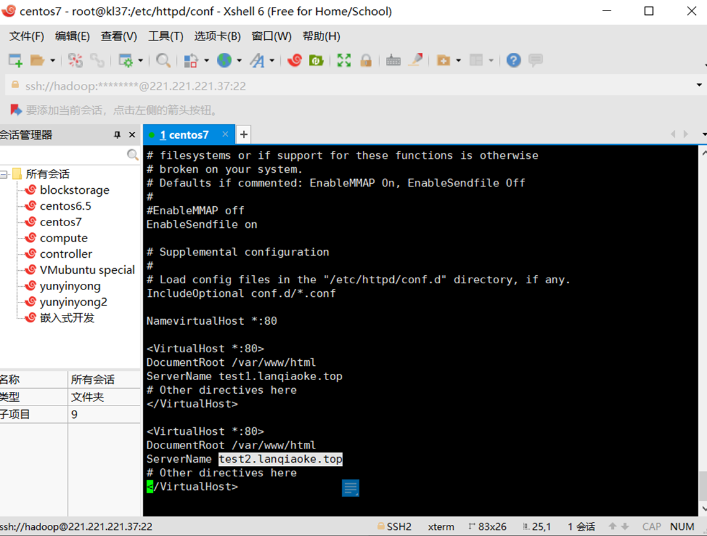
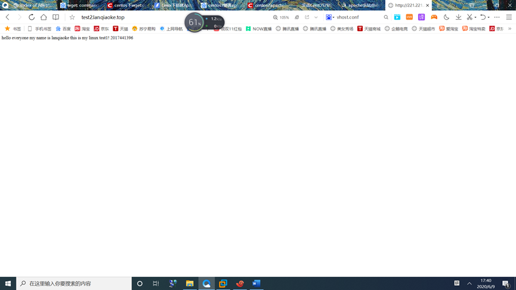
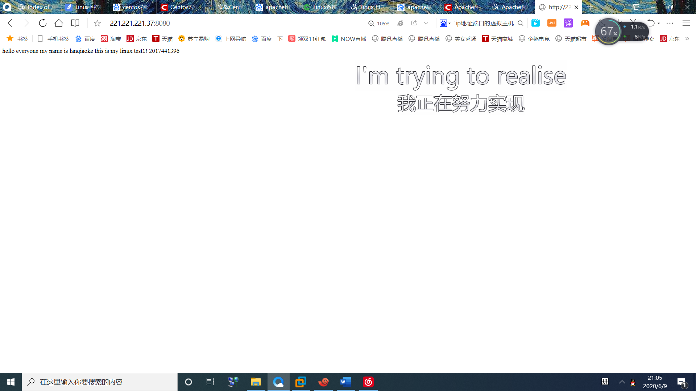
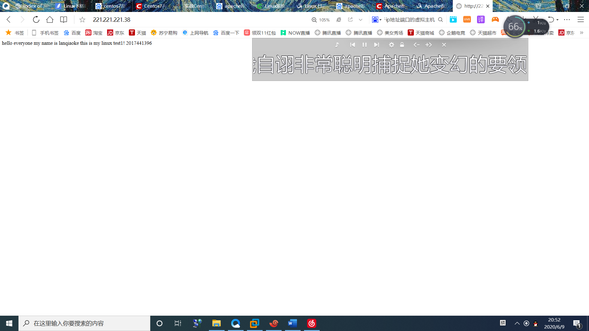
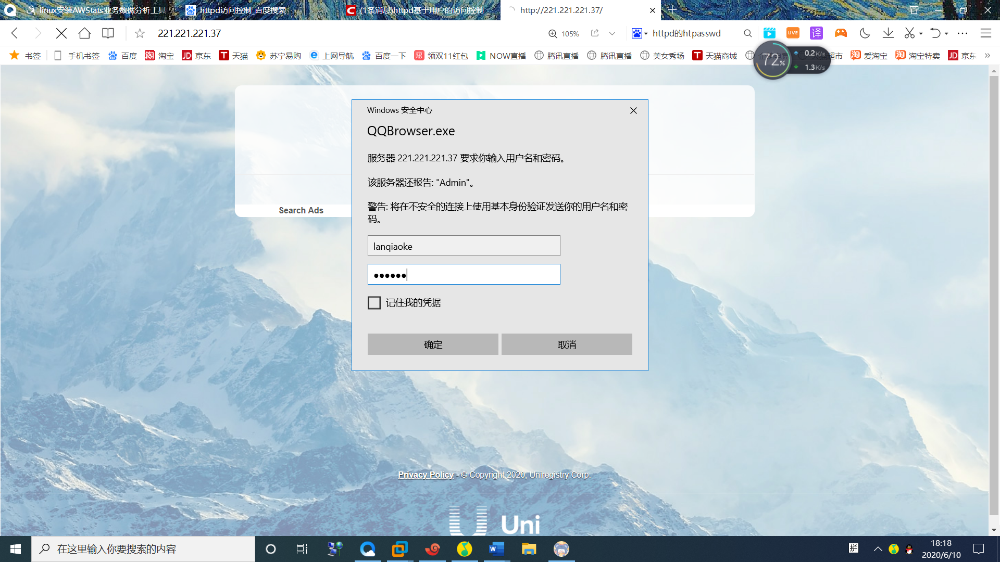
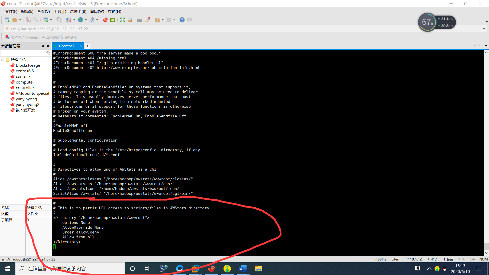
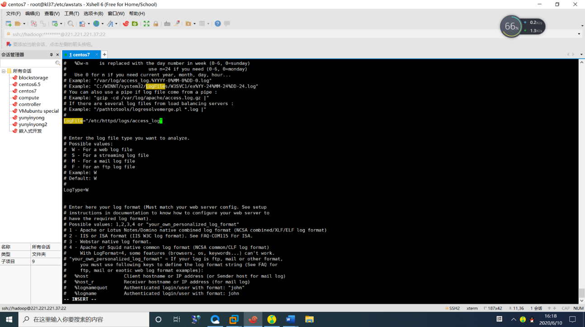
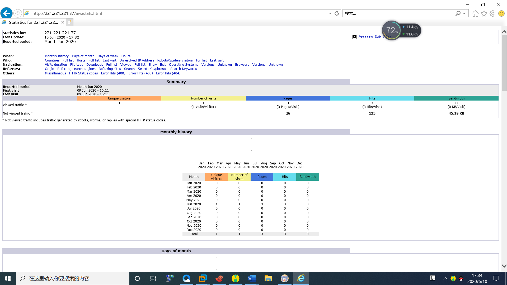

在centos7中搭建自己的apache服务器
# Apache 服务
Apache HTTP Server（简称Apache）是Apache软件基金会的一个开放源码的网页服务器，可以在大多数计算机操作系统中运行，由于其多平台和安全性被广泛使用，是最流行的Web服务器端软件之一。它快速、可靠并且可通过简单的API扩展，将Perl/Python等解释器编译到服务器中。
Apache HTTP服务器是一个模块化的服务器，源于NCSAhttpd服务器，经过多次修改，成为世界使用排名第一的Web服务器软件。 它可以运行在几乎所有广泛使用的计算机平台上。 Apache源于NCSAhttpd服务器，经过多次修改，成为世界上最流行的Web服务器软件之一。Apache取自“a patchy server”的读音，意思是充满补丁的服务器，因为它是自由软件，所以不断有人来为它开发新的功能、新的特性、修改原来的缺陷。Apache的特点是简单、速度快、性能稳定，并可做代理服务器来使用。 本来它只用于小型或试验Internet网络，后来逐步扩充到各种Unix系统中，尤其对Linux的支持相当完美。Apache有多种产品，可以支持SSL技术，支持多个虚拟主机。Apache是以进程为基础的结构，进程要比线程消耗更多的系统开支，不太适合于多处理器环境，因此，在一个Apache Web站点扩容时，通常是增加服务器或扩充群集节点而不是增加处理器。到目前为止Apache仍然是世界上用的最多的Web服务器，市场占有率达60%左右。世界上很多著名的网站如Amazon、Yahoo!、W3 Consortium、Financial Times等都是Apache的产物，它的成功之处主要在于它的源代码开放、有一支开放的开发队伍、支持跨平台的应用（可以运行在几乎所有的Unix、Windows、Linux系统平台上）以及它的可移植性等方面。 Apache的诞生极富有戏剧性。当NCSAWWW服务器项目停顿后，那些使用NCSAWWW服务器的人们开始交换他们用于该服务器的补丁程序，他们也很快认识到成立管理这些补丁程序的论坛是必要的。就这样，诞生了Apache Group，后来这个团体在NCSA的基础上创建了Apache。 Apacheweb服务器软件拥有以下特性： 1.支持最新的HTTP/1.1通信协议 2.拥有简单而强有力的基于文件的配置过程 3.支持通用网关接口 4.支持基于IP和基于域名的虚拟主机 5.支持多种方式的HTTP认证 6.集成Perl处理模块 7.集成代理服务器模块 8.支持实时监视服务器状态和定制服务器日志 9.支持服务器端包含指令(SSI) 10.支持安全Socket层(SSL) 11.提供用户会话过程的跟踪 12.支持FastCGI 13.通过第三方模块可以支持JavaServlets 如果你准备选择Web服务器，毫无疑问Apache是你的最佳选择。
# 部署web服务设计
本次测试目标为在Vmware平台搭建自己的apache web网站，并通过awstats来对网站进行访问分析，搭建好网站后可通过对apache的配置文件进行修改来实现对httpd服务的访问控制、客户机的地址限制、用户授权限制，构建虚拟WEB主机、基于域名的虚拟主机、基于IP地址、端口的虚拟主机。最后利用宿主机的网页浏览器能够进行访问和验证搭建好的网页。 宿主机安装好Vmware控制台，准备好用于服务器搭建的Linux系统CentOS7，再准备好httpd及其tools工具包的下载链接，之后在服务器上安装服务器后下载awstats及其依赖包，完成各项配置即可。
# 安装服务及对其进行相应的配置
1部署准备
本次部署项目准备通过wget命令来安装httpd及其tools工具包，这样就准备好了web部署所需的软件包，之后再同样通过wget来安装好AWStats及其依赖包，完成对日志分析的准备，通过配置apach来部署好web网页后再在httpd的配置文件中对配置信息进行修改来实现三种不同的访问控制，包括访问控制，客户机的地址限制，用户授权限制。同样的，修改CentOS等的配置信息来实现构建虚拟WEB主机，基于域名的虚拟主机，基于IP地址、端口的虚拟主机。 关于服务器的部署因为这次只是我自己的一个尝试，所以我没有去云服务平台购买云服务器，而是选择了Vmware Workstation平台的CentOS7虚拟机来替代，进行web的部署。
本书所使用的软件包及其版本(可使用其他更新版本的软件）：
注意：最好去官方网站找到下载包链接，避免使用百度到的包，以免下载到虚拟机后出现不可解决的问题。
httpd-2.2.27.tar.gz awstats-7.0.tar.gz perl-5.16.1.tar.gz
本书搭建服务器的环境 CentOS7.0版本 IP地址：221.221.221.37 255.255.255.0
配置好yum仓库
2搭建服务
第1步：卸载httpd软件及相关软件包
# rpm -e httpd httpd-manual webalizer subversion mod_python mod_ssl mod_perl system-config-httpd php php-cli php-ldap php-common mysql dovecot --nodeps
注释：--nodeps是强制接触依赖关系
第2步：检查手工编译需要的4中软件包是否安装
# rpm -q gcc
# rpm -q gcc-c++
# rpm -q make
# yum install pcre-devel -y
第3步：解压软件包及源码编译安装Apache并进行配置
# tar zxvf httpd-2.2.27.tar.gz
# make #编译，将编译程序变为可执行程序
# make test
# make install #安装
# Vi http.conf #进行基础文档配置
# service httpd start #启动服务没有效果
# netstat -anutp | grep http #监听http服务
至此，基础的部署已经完成，在主机上正常情况下应该可以通过在浏览器输入服务器的IP地址来看到apache web服务的欢迎画面。
注意： 要保证两台设备能够正常进行连接，可使用ping指令来确认连接无误，若初次尝试ping未能连通很可能是因为防火墙，可关闭设备的防火墙。此操作有风险，请谨慎操作！
3构建虚拟WEB主机 虚拟Web主机在同一台服务器中运行多个Web站点，其中每一个站点并不独立占用一 台真正的计算机 httpd支持的虚拟主机类型 1、基于域名的虚拟主机 2、基于IP地址的虚拟主机 3、基于端口的虚拟主机
第1步：基于域名的虚拟主机 需求： 1：本次将构建2个虚拟Web站点： Test1.lanqiaoke.top，IP地址为 221.221.221.37 Test.lanqiaoke.top，IP地址为 221.221.221.37
2：通过添加如下图中的配置信息到http服务的配置文档中实现

3：物理主机ping域名测试
CMD：C:\Users\93213>Ping Test1.lanqiaoke.top C:\Users\93213>Ping Test2.lanqiaoke.top 4：重启httpd服务 [root@]# systemctl restart httpd
操作完成后，您将可通过使用虚拟站点来访问您的Web页面，在此之前记得完成第四步重启httpd服务来使您的最新配置文件生效。

第2步：配置基于IP+端口的虚拟主机 1:创建配置文件 [root@localhost ~]# cd /etc/httpd/conf.d/ [root@localhost conf.d]# vim virtual.conf
<VirtualHost 221.221.221.37:80>
ServerName test2
DocumentRoot "/var/www/html "
</VirtualHost>
<VirtualHost 221.221.221.37:8080>
ServerName test3
DocumentRoot "/var/www/html"
</VirtualHost>
2:修改httpd主配置文件，在Listen 80下面添加一行监控8080端口 [root@localhost conf.d]# vim /etc/httpd/conf/httpd.conf Listen 8080
3：重启httpd服务 [root@]# systemctl restart httpd 4：打开浏览器，查看结果

第3步：添加基于多个IP的虚拟主机 1:创建配置文件
[root@localhost ~]# cd /etc/httpd/conf.d/
[root@localhost conf.d]# vim virtual.conf
<VirtualHost 221.221.221.37:80>
ServerName a.com
DocumentRoot "/var/www/html" #网页路径
</VirtualHost>
<VirtualHost 221.221.221.38:80>
ServerName b.com
DocumentRoot "/var/www/html " #网页路径
</VirtualHost>
2:网卡绑定多个IP（我的网卡名是ens33，不是eth0）
[root@localhost conf.d]# ip addr add 221.221.221.38 dev ens33
[root@localhost conf.d]# ip addr#查看IP配置是否正确生效
3:检查配置文件是否正常
[root@localhost conf.d]# httpd -t
4：重启httpd服务
[root@]# systemctl restart httpd
5：打开浏览器，查看结果

4 Httpd服务访问控制 作用： 1控制对网站资源的访问 2为特定的网站目录添加访问授权
常用访问控制方式： 1客户机地址限制 2用户授权限制
1客户机地址限制 通过配置Order、Deny from、Allow from 来限制客户机 allow、deny ：先"允许"后"拒绝" ，默认拒绝所有为明确的客户机地址。 deny、allow：先"拒绝"后"允许"，默认允许所有为明确的客户机地址
[root@www tools]# vim /usr/local/httpd/conf/httpd.conf
<Directory />
Options FollowSymLinks
AllowOverride None
Order deny,allow
Deny from all
</Directory>
2用户授权限制 第1步：httpd服务器支持使用摘要认证（Digest）和基本认证（Basic）两种方式。使用摘要认证需要在编译httpd之前添加"--enable-auth-digest"选项、但并不是所有的浏览器都支持摘要认证、基本认证不需要预先配置。
[root@www tools]# cd /usr/local/httpd/
[root@www httpd]# bin/htpasswd -c /usr/local/httpd/conf/.awspwd webadmin
New password:
Re-type new password:
Adding password for user webadmin
[root@www httpd]# cat /usr/local/httpd/conf/.awspwd #确认用户数据文件
lanqiaoke:$apr1$ICdyiYAY$VVDvzApAlvqyJ/5w3f7251
省略-c选择、表示用户数据文件已经存在、添加新用户或修改现有用户的密码、测不需要指定-c选项
第2步：添加用户授权配置
[root@www httpd]# vim /usr/local/httpd/conf/httpd.conf #追加如下内容
<Directory "/usr/local/awstats/wwwroot">
AuthName "AWStats Directory"
AuthType Basic
AuthUserFile /usr/lcoal/httpd/conf/.awspwd
require valid-user
</Directory>
[root@www httpd]# /usr/local/httpd/bin/apachectl restart #重启服务使配置生效
AuthName ：定义受保护领域的名称
AuthType: 设置认证的类型、Basic表示基本认证
AuthUserFile :设置用于保存用户账号、密码的认证文件路径
require valid-user：要求认证文件存在的用户才能访问
第3步：重启服务并验证配置是否生效
[root@]# systemctl restart httpd

5 AWStats业务数据分析工具安装及配置
Awstats是一个非常简洁而且强大的统计工具。它可以统计您站点的如下信息：
一：访问量，访问次数，页面浏览量，点击数，数据流量等精确到每月、每日、每小时的数据
二：访问者国家、访问者IP、操作系统、浏览器等
三：Robots/Spiders的统计
四：纺客持续时间
五：对不同Files type 的统计信息
六：Pages-URL的统计
七：其它信息（搜索关键字等等）
http://awstats.sourceforge.net/ awstats官方网站
http://www.perl.com/ perl官方网站
第1步:安装perl
Awstats基于Perl的WEB日志分析工具，网上关于它的介绍还是比较多的，因为是基于perl开发的，在管在windows还是linux下都需要先安装perl环境。所以，我们先安装perl 。
[root@localhost awstats]# tar xvfz perl-5.16.1.tar.gz 解压
[root@localhost awstats]# cd perl-5.16.1 进入目录
[root@localhost perl-5.16.1# rm -f config.sh Policy.sh
[root@localhost perl-5.16.1]# sh Configure -de
[root@localhost perl-5.16.1]#make 编译
[root@localhost perl-5.16.1]# make test
[root@localhost perl-5.16.1]# make install 安装
config.sh Policy.sh 为以前安装时的配置文件，新安装或升级安装时需要将其删除。
sh Configure -de 安装使用默认配置
make test 执行make命令， 然后make根据test目标规则， 执行规定的操作。
安装完成后 perl 所在目录为 /usr/local/lib/perl5, perl 执行文件在 /usr/local/bin 中。
第2步:安装awstats
[root@localhost awstats]# tar xvfz awstats-6.4.tgz
[root@localhost awstats]# mkdir /etc/awstats
[root@localhost awstats]# mkdir /var/lib/awstats
上面创建的两个目录都将在后面的配置中用到，一个用于存放站点日志分析的配置文件，一个用于存放日志数据信息。
[root@localhost awstats]# cp -R ./awstats-7.0 /usr/local/
-R 表示复制目录及目录内的所有项目到/usr/local/目录下
[root@localhost test]# mv awstats-7.0 awstats 进行一个重命名，便于操作而已。
第3步:配置awstats
[root@localhost tools]# pwd
/usr/local/awstats//tools
Awstats的配置有自带的配置工具awstats_configure.pl ，首先用vi打开configure.pl文件，看看第一行有关perl运行环境的配置是否正确。
[root@localhost tools]# vi awstats_configure.pl
#!/usr/bin/perl
.............
[root@localhost tools]# pwd
/usr/local/awstats/tools
[root@localhost tools]# perl awstats_configure.pl 运行配置文件
awstats_configure.pl工具会自动修改您的apache配置，在apache的配置文件httpd.conf文件中自动修改下面信息
[root@localhost conf]# pwd
/usr/local/apache/conf
[root@localhost conf]# vi httpd.conf
awstats_configure.pl自动在httpd.conf文件最底部添加了以下内容：

awstats_configure.pl还将根据安装过程中您的回答（要分析的网站名称）信息，自动生产 /etc/awstats/awstats.index.conf文件
[root@localhost awstats]# pwd
/etc/awstats
[root@localhost awstats]# ls
awstats.index.conf
[root@localhost awstats]# vi awstats.index.conf 配置下面文件

到此我们就完成了awstats的安装与配置工作.
分析日志
开启服务
[root@localhost cgi-bin]# pwd
/usr/local/awstats/wwwroot/cgi-bin
[root@localhost cgi-bin]# chmod +x awstats.pl 加可执行权限
[root@localhost cgi-bin]# perl /awstats.pl -update -config=221.221.221.37
在浏览器里输入： http://localhost/awstats/awstats.pl?config=221.221.221.37 然后就可以看到生成的日志报告了.

# 小结
本次实验编译完成了编译安装httpd服务器，熟悉了httpd服务的部署过程及常见配置，构建AWStats日志分析系统，httpd服务的访问控制、客户机的地址限制、用户授权限制，构建虚拟WEB主机、基于域名的虚拟主机、基于IP地址、端口的虚拟主机，利用网页浏览器能够进行访问。
这是笔者初次接触嵌入式平台的Web服务部署，如有不足请多包涵，欢迎大家提出各种建议。